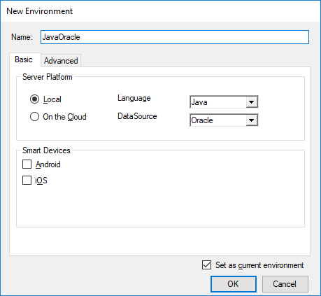
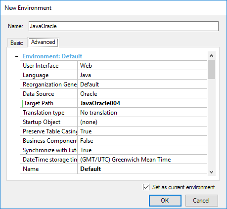

PurposeAllows to create a new environment in the Knowledge Base, by selecting the Server Platform, the Language, the DataSource, and whether it is a Smart Devices environment or not. DescriptionThrough this dialog a new environment can be created in the KB by specifying the basic information needed for that purpose.
 Through the Advanced tab, additional information can be configured. 
|
| Backlinks |
| .Net Generator Extraction Directory property |
| Java Generator Extraction Directory property |